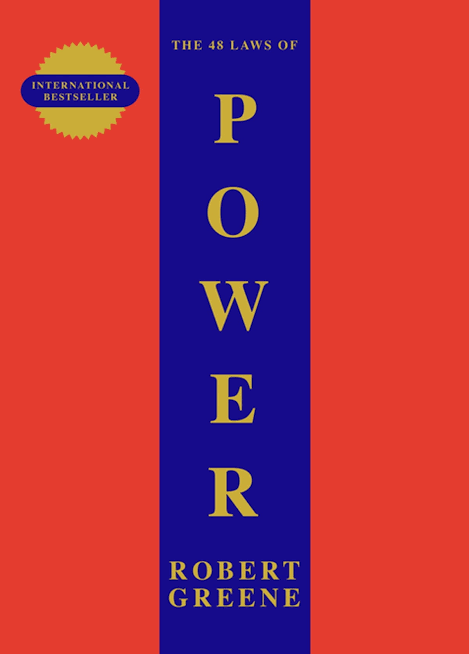

You are free to add other books too
By Robert Greene
The 48 Laws of Power by Robert Greene is a self-help book offering advice on how to gain and maintain power, using lessons drawn from parables and the experiences of historical figures. Power depends on the relationships between a person and those he or she seeks to control.
By Napoleon Hill
Think and Grow Rich by Napoleon Hill is a classic self-help book that teaches how to attain wealth and success through positive thinking, persistence, and focused desire. It offers practical techniques and inspiring examples of successful people who achieved their dreams using these same principles.
By James Clear
Atomic Habits presents a proven system for building good habits and breaking bad ones. The key to building lasting habits is focusing on creating a new identity first. Your current behaviors are simply a reflection of your current identity.
By Morgan Housel

The Psychology of Money by Morgan Housel explores the complex relationship between money and human behavior in an accessible way. It offers insights into how we perceive and manage our finances, and the impact of emotions on our financial decisions.